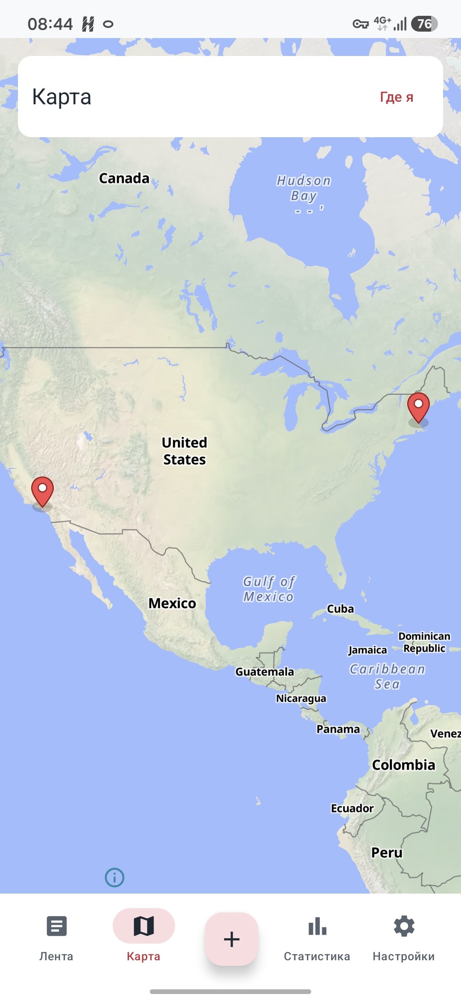
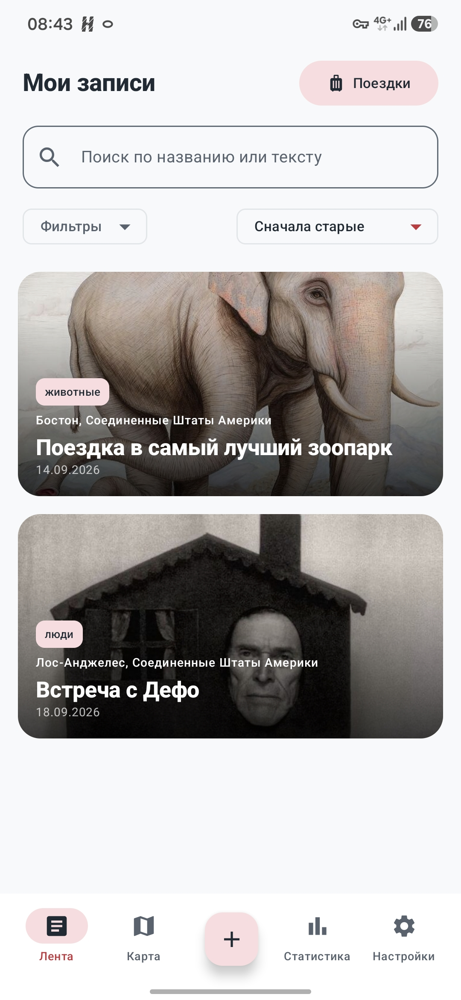
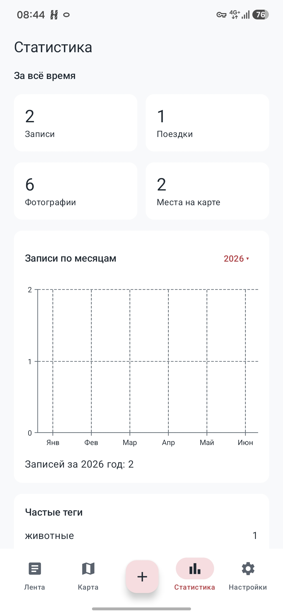
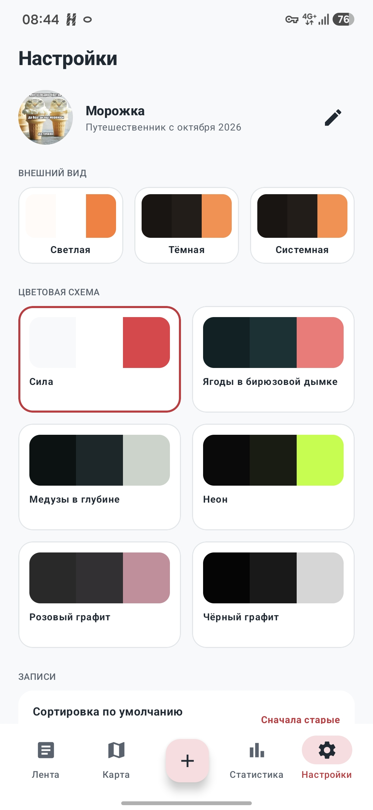

Начинайте с первой записи
Без создания аккаунта. Установите приложение – и сохраните то, что хочется запомнить.
Сохраняйте фотографии и заметки, отмечайте места на карте и объединяйте записи в поездки.
Бесплатно · Без регистрации · Android 8.0+


Без создания аккаунта. Установите приложение – и сохраните то, что хочется запомнить.
Добавьте фотографии, пару строк и теги. Всё, что поможет вспомнить не только место, но и ощущения.
Укажите место вручную или определите геопозицию. Откройте карту и вернитесь к записи прямо из отметки.
Объедините записи по датам путешествия. А для прогулки одного дня просто оставьте запись без поездки.
Фотографии, заметки и быстрый поиск по воспоминаниям.
Все записи с координатами – на одной карте.

Записи по месяцам, любимые теги и сохранённые места.

Светлая, тёмная и готовые цветовые схемы.
Установите приложение на телефон с Android 8.0 или новее.
Скачайте APK на Android и откройте файл. Если система запросит разрешение на установку из этого источника, разрешите её для выбранного браузера или файлового менеджера.
Для загрузки карты и поиска названия места или адреса. Создавать записи, добавлять фотографии и просматривать дневник можно без подключения.
Локально на вашем устройстве. Чтобы не потерять дневник при смене телефона или удалении приложения, сохраните ZIP-копию через настройки и перенесите её в надёжное место.
Да. Экспортируйте ZIP в настройках, перенесите архив и импортируйте его в TravelLog на другом устройстве. Импорт заменяет текущий дневник, поэтому предварительно сохраните его, если в нём уже есть нужные записи.